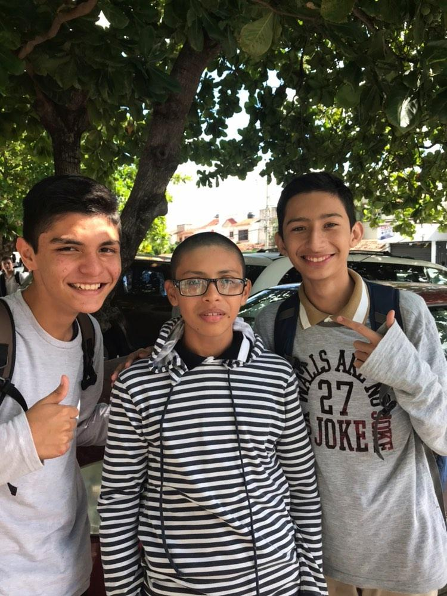

Childhood Stages
0-6 Years
For my childhood stages, I had two school periods. From ages 6 to 10, I was going to elementary school in Orizaba. I don't have many memories from that time, but I know I was going to be a happy and joyful kid.

Childhood Stages
6-12 Years
For my teenage days, I studied my last elementary year here in Cancún. Middle school was going to be a tough time in my life, not because something particularly bad happened, just the general challenges of being a teenager. However, I am going to have good memories with my friends Mauricio and Enrique; we were going to be really good friends back then.